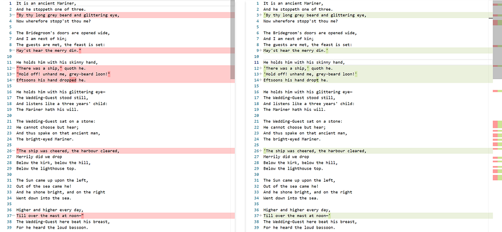
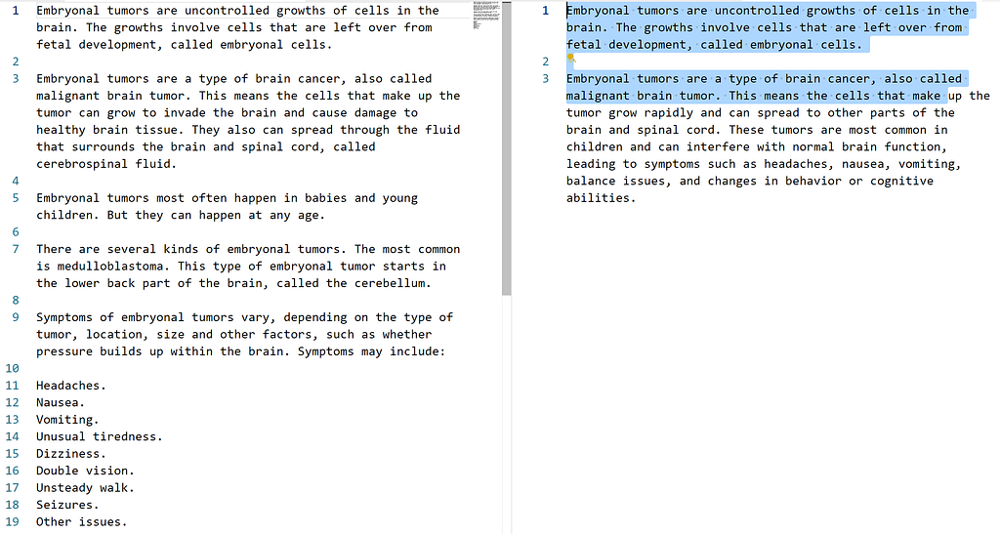
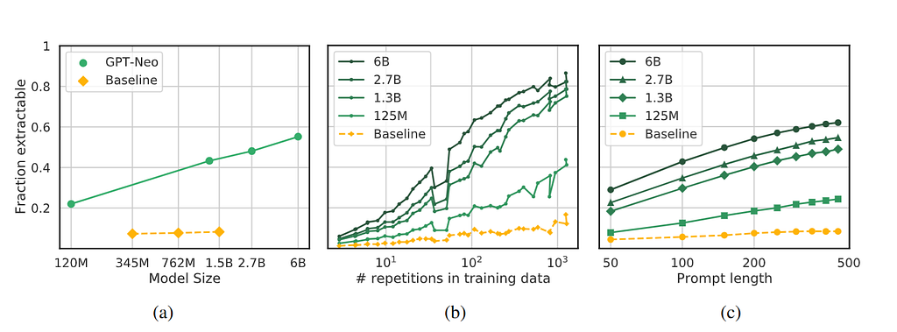
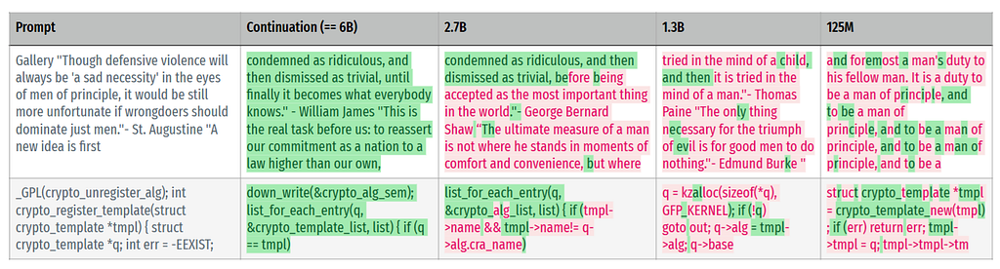

As we enter 2025, LLMs have become ubiquitous, and it’s now widely understood that they can retain information from their training data.
We’ve all witnessed this in various ways — whether it’s seeing a response that mirrors a snippet from a Wikipedia page or asking ChatGPT about yourself in its early days and being surprised by how much it seemed to know from memory.
In Carlini, Nicholas, et al. “Quantifying memorization across neural language models.” arXiv preprint arXiv:2202.07646 (2022), authors show the log linear relationship memorization has, and with the increase in model capacity size and it's expected to get worse in the future. Quote below,
We find that memorization in LMs is more prevalent than previously believed and will likely get worse as models continues to scale, at least without active mitigations.
Types of memorizations in LLM
Verbatim memorization
Here is an example of verbatim memorization by ChatGPT. Since poems tend to have a long unique sequence of words, lets pick that for analysis.
We ask ChatGPT to recite the poem Part I: The Rime of the Ancient Mariner
Here is a comparison between ChatGPT’s recital and web version for the first few stanzas. Results show near identical rendering of the version from ChatGPT’s parametric memory.

Paraphrased memorization:
Here is a passage from Mayo Clinic on Embryonal tumors that is roughly paraphrased when prompted with the blue highlighted text as the prompt, in a sentence completion task. These cases are harder to determine if they did originate from a certain source. However, if the material is unique then it's easier to ascertain the source.

Things that impact memorization
In this article let's see how the following three things impact memorization,
- Size of the model
- String repetitions in training dataset
- Effect of the suspected content’s string prefix presence in prompt

In 5(a) we see that the memorization effect is seen more as the model gets bigger. This is concerning as the models are continuing to get bigger and the privacy risks of memorization are only poised to rise.
5(b) shows that more the text is duplicated in the training dataset the model is more likely to remember. From a privacy standpoint if address, phone number, social media posts, etc. aren’t present out in the public spaces in severe repetition, the chances of model remembering the content goes down.
5(c) shows the effect prompting has on revealing the memorization impact, the more original text prefix is present in the prompt, there is increased likelihood of getting a memorized suffix back. In case of copyright violation cases like NY Times vs Microsoft, Meta vs Authors, this prompting strategy can be used to prove the memorization, as the copyrighted owner has complete access to the suspected data.
Here is a further illustration of the model size’s impact on memorization,

As seen in the Figure 6, authors show that 6B model is able to reproduce these test sentences verbatim compared to the smaller models.
Why is it important to understand memorization?
Be it concerns like privacy or copyright or benefits like factual data retention, the memorization is eventually going to impact all the users of language models.
From the privacy front, LLMs are going to be snapshots of web from fixed time that is possibly retained forever. (GPT 4 - End of 2023).
For example, an embarrassing social media stunt that's publicized over internet can be memorized by LLM and may affect responses when a particular individual’s name is mentioned.
With this in context, let's take a deep dive on this topic and explore the following areas in the upcoming articles.
- What information gets retained in parametric memory of LLMs?
- Correlation of training data distribution with memorization
- When does this memorization play out at inference time?
- What can be done to fix this?
Note:
Measures the memorization by prompting the model with partial strings from training data, in real life situations this is impractical as users may not have knowledge on what was present in the training dataset. However, the research goes to quantify how much data is actually present in memory of LLMs which helps quantify this effect.
References: